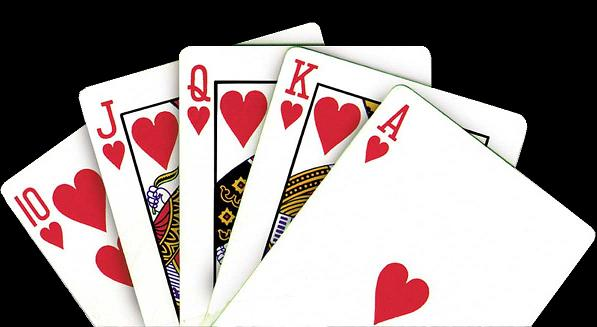

Trong bộ bài tiến lên có 13 dạng lá bài đánh số theo thứ tự 3, 4, 5, 6, 7, 8, 9, 10, J, Q, K, A, 2. Mỗi dạng lá bài có 4 loại: cơ (C), rô (R), chuồng(G), bích(B). Tổng cộng bộ bài có 52 lá. Trong trò chơi tiến lên, một người được chia 13 lá bài theo thứ tự ngẫu nhiên. Sau khi chia bài, một người được gọi là ăn trắng nếu 13 lá bài của người đó thỏa mãn một trong bốn tính chất sau:
- Gồm đầy đủ 13 lá khác nhau: 3, 4, 5, 6, 7, 8, 9, 10, J, Q, K, A, 2 (không phân biệt cơ, rô, chuồng, bích).
- Có đủ 4 lá bài tứ quý 2: 2 cơ, 2 rô, 2 chuồng, 2 bích. Các bộ tứ quý khác không tính.
- Có 5 đôi thông liên tiếp (không phân biệt cơ, rô, chuồng, bích). Liên tiếp ở đây tính theo đúng thứ tự trên, nghĩa là 3 nhỏ nhất và 2 lớn nhất. Ví dụ 5 đôi thông liên tiếp: (3C 3R), (4G 4B), (5R 5B), (6C 6G), (7R 7G). Các đôi J, Q, K, A, 2 cũng được xem là 5 đôi liên tiếp.
- Có 6 đôi bất kỳ không cần liên tiếp. Tứ quý được tính là 2 đôi.
Nam đang có 13 lá bài mà không biết mình có được ăn trắng hay không, bạn hãy giúp Nam nhé. Để đơn giản cho việc nhập liệu, ta sẽ ký hiệu lá bài 10 là ký tự T.
Dữ liệu nhập:
- Gồm 13 dòng, mỗi dòng gồm 2 ký tự liên tiếp thể hiện lá bài. Ký tự đầu tiên là dạng lá bài, ký tự thứ hai là loại lá bài (ví dụ: 3C -> 3 cơ, KR -> già rô, TB -> 10 bích). Dữ liệu cho đảm bảo hợp lệ.
Dữ liệu xuất:
- Nếu Nam được ăn trắng in ra YES.
- Nếu không được ăn trắng in ra NO.